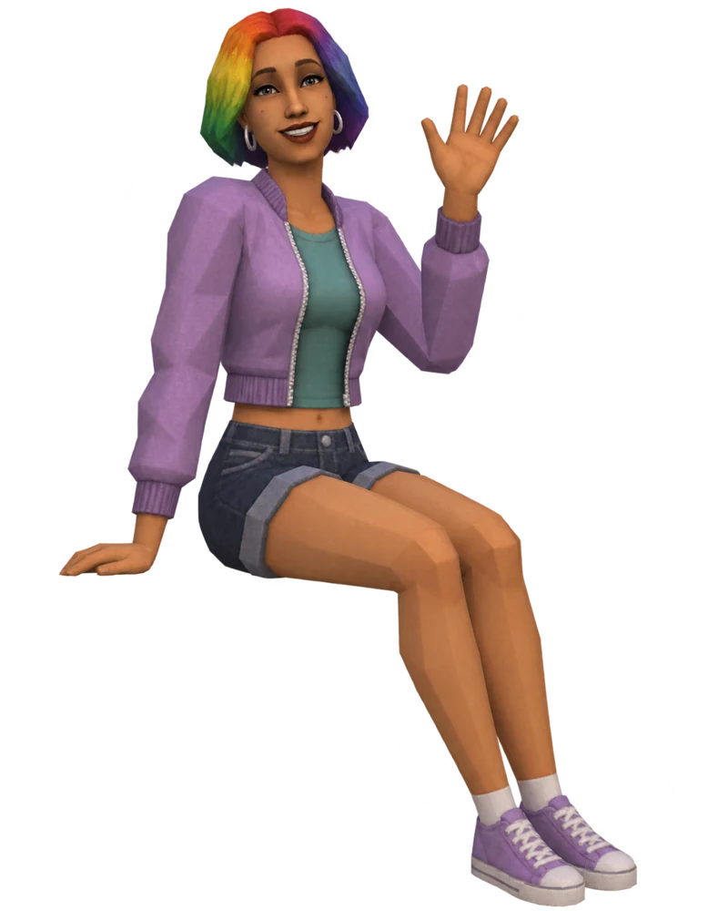

Notes from the workbench
The making
of a little more.
How the mods started, what surprised me, and what happened when I tried them in the game.


Every computer is a good computer
Giving even the cheapest computer the gaming-skill and hacking-money upgrades, without changing tournament payouts.
Even the cheapest computer deserves
a good upgrade.
Gaming skill and hacking income, without changing the tournament payouts.
Read the story →
Two more ways to move in
Moving from inside the game brings a few surprises, especially when another household already lives in the home you want.

Two mods that quietly did nothing
Gifts weren't arriving and toddlers couldn't turn on the TV. Here's what was getting in the way and how we fixed it.

Seven failed tries and a robot tester
Testing by hand wore us both out, so we built a tool to repeat the clicks and check the results on copies of our saves.

How a park became a home
Moving into a park was only half the problem. Getting the game to treat it as a home took a little more figuring out.

Hello, world
I started this devlog while making MoveAnywhere and a handful of smaller Sims 4 mods. Here's where it all began.